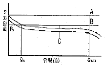
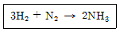
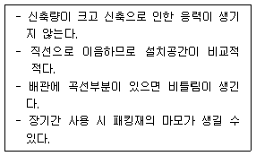
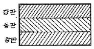
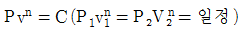
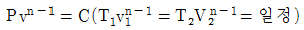
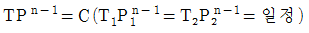
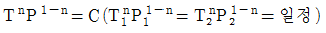
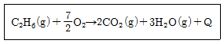
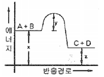

가스기능장 (2011-07-31 기출문제)
1과목: 임의 구분
1. 염소압축기의 윤활유로 적당한 것은?
- 양질의 물
- 진한 황산
- 양질의 광유
- 10%이하의 묽은 글리세린
(정답률: 77%)

2. 액화석유가스용 콕의 내열성능의 기준에 대한 설명으로 옳은 것은?
- 콕을 연 상태로 (40±2)℃에서 각각 30분간 방치한후 지체 없이 기밀시험을 실시하여 누출이 없고 회전력은 0.588N·m 이하인 것으로 한다.
- 콕을 연 상태로 (40±2)℃에서 각각 60분간 방치한 후 지체 없이 기밀시험을 실시하여 누출이 없고 회전력은 0.688N·m 이하인 것으로 한다.
- 콕을 연 상태로 (60±2)℃에서 각각 30분간 방치한 후 지체 없이 기밀시험을 실시하여 누출이 없고 회전력은 0.588N·m 이하인 것으로 한다.
- 콕을 연 상태로 (60±2)℃에서 각각 60분간 방치한 후 지체 없이 기밀시험을 실시하여 누출이 없고 회전력은 0.688N·m 이하인 것으로 한다.
(정답률: 70%)
3. 기체의 압력(P)이 감소하여 압력(P)이 0인 한계상황에서 기체 분자의 상태는 어떻게 되는가?
- 분자들은 점점 더 넓게 분산된다.
- 분자들은 점점 더 조밀하게 응집된다.
- 분자들은 아무런 영향을 받지 않는다.
- 분자들은 분산과 응집의 균형을 유지한다.
(정답률: 89%)
4. 다음 [그림]은 정압기의 정상상태에서 유량과 2차 압력과의 관계를 나타낸 것이다. A, B, C 에 해당되는 용어를 순서대로 옳게 나타낸 것은?

- A : Lock up B : Off set C : Shift
- A : Off set B : Lock up C : Shift
- A : Shift B : Off set C : Lock up
- A : Shift B : Lock up C : Off set
(정답률: 85%)
5. 용기에 의한 가스운반의 기준에 대한 설명 중 틀린 것은?
- 적재함에는 리프트를 설치하여야 하며, 적재할 충전용기 최대 높이의 2/3이상까지 적재함을 보강하여야 한다.
- 운행 중에는 직사광선을 받으므로 충전용기 등이 40℃ 이하가 되도록 온도의 상승을 방지하는 조치를 하여야 한다.
- 충전용기를 용기보관소로 운반할 때는 사람이 직접운반하되, 이 때 용기의 중간 부분을 이용하여 운반한다.
- 충전용기 등을 적재한 차량은 제1종 보호시설에서 15m 이상 떨어진 안전한 장소에 주정차 하여야 한다.
(정답률: 88%)
6. 암모니아를 사용하는 공장에서 저장능력 25톤의 저장탱크를 지상에 설치하고자 한다. 저장설비 외면으로 부터 사업소 외의 주택까지 몇 미터 이상의 안전거리를 유지하여야 하는가? (단, A 공장의 지역은 전용공업지역이 아님)
- 7m
- 10m
- 14m
- 16m
(정답률: 57%)
7. 고압가스냉동제조시설의 검사기준 중 내압 및 기밀시험에 대한 설명으로 틀린 것은?
- 내압시험은 설계압력의 1.5배 이상의 압력으로 한다.
- 내압시험에 사용하는 압력계는 문자판의 크기가 75mm 이상으로서 그 최고눈금은 내압시험압력의 1.5배 이상 2배 이하로 한다.
- 기밀시험압력은 상용압력 이상의 압력으로 한다.
- 시험할 부분의 용적이 5m3 인 것의 기밀시험의 유지시간은 480분이다.
(정답률: 77%)
8. 다음 중 100kPa과 같은 압력은?
- 1 atm
- 1 bar
- 1 kg/cm2
- 100 N/cm2
(정답률: 68%)
9. 소형용접기에의 액화석유가스 충전의 기준에 대한 설명으로 틀린 것은?
- 제조 후 10년이 경과하지 않은 용접용기인 것이어야 한다.
- 캔밸브는 부착한지 3년이 경과하지 않아야 하며, 부착연월이 각인되어 있는 것이어야 한다.
- 소형용접용기의 상태가 관련법에서 정하고 있는 4급에 해당하는 찍힌흠, 부식, 우그러짐 및 화염에 의한 흠이 없는 것 이어야 한다.
- 충전사업자는 소형용접용기의 표시사항을 확인하고 표시사항이 훼손된 것은 다시 표시한다.
(정답률: 82%)
10. 고압가스 취급 장치로부터 미량의 가스가 누출되는 것을 검지하기 위하여 시험지를 사용한다. 검지가스에 대한 시험지 종류와 반응색이 옳게 짝지어진 것은?
- 아세틸린 - 염화제1구리착염지 - 적색
- 포스겐 - 연당지 - 흑색
- 암모니아 - KI전분지 - 적색
- 일산화탄소 - 초산벤지딘지 - 청색
(정답률: 89%)
11. 다음 중 용기부속품의 기호표시로 틀린 것은?
- AG : 아세틸렌가스를 충전하는 용기의 부속품
- PG : 압축가스를 충전하는 용기의 부속품
- LT : 초저온용기 및 저온용기의 부속품
- LG : 액화석유가스를 충전하는 용기의 부속품
(정답률: 86%)
12. 다음 중 자유도가 가장 작은 것은?
- 승화곡선
- 증발곡선
- 삼중점
- 용융곡선
(정답률: 90%)
13. 암모니아의 물리적 성질에 대한 설명 중 틀린 것은?
- 쉽게 액화한다.
- 증발잠열이 크다.
- 자극성의 냄새가 난다.
- 물에 녹지 않는다.
(정답률: 87%)
14. 다음 가스의 성질에 대한 설명 중 옳지 않은 것은?
- 암모니아는 산이나 할로겐과 잘 화합하고 고온, 고압에서는 강재를 침식한다.
- 산소는 반응성이 강한 가스로서 가연성 물질을 연시키는 조연성(助燃性)이 있다.
- 질소는 안정한 가스로서 불활성 가스라고도 하는데 고온하에서도 금속과 화합하지 않는다.
- 일산화탄소는 독성가스이고, 또한 가연성가스이다.
(정답률: 89%)
15. 다음 가스 중 폭발 위험도가 가장 큰 물질은?
- CO
- NH3
- C2H4O
- H2
(정답률: 80%)
16. 재해용 약제로서 가성소다(NaOH)나 탄산소다(Na2CO3)의 수용액을 사용할 수 없는 것은?
- 염소(Cl2)
- 아황산가스(SO2)
- 황화수소(H2S)
- 암모니아(NH3)
(정답률: 78%)
17. 암모니아 제조법 중 haber-bosch 법은 수소와 질소를 혼합하여 몇 도의 온도와 몇 기압의 압력으로 합성시키며 촉매는 무엇을 사용하는가?
- 400~500℃, 300atm, Fe, Al2O3
- 150~300℃, 10atm, 백금
- 1000℃, 800atm, NaCl
- 150~200℃, 450atm, 알루미늄과 은
(정답률: 81%)
18. 비중이 1 인 물과 비중이 13.6 인 수은으로 구성된 U자형 마노미터의 압력차가 0.2기압일 때 마노미터에서 수은의 높이차는 약 몇 cm 인가?
- 13
- 16
- 19
- 22
(정답률: 50%)
19. 용기에 의한 가스의 운반기준에 대한 설명으로 틀린 것은?
- 충전용기는 자전거나 오토바이로 적재하여 운반하지 아니한다.
- 독성가스 중 가연성가스와 조연성가스는 동일차량 적재함에 운반하지 아니한다.
- 밸브가 돌출한 충전용기는 고정식프로텍터나 캡을 부착시켜 밸브의 손상을 방지하는 조치를 한다.
- 충전용기와 휘발유를 동일 차량에 적재하여 운반할 경우에는 시, 도지사의 허가를 받는다.
(정답률: 93%)
20. 순수한 수소와 질소를 고온, 고압에서 다음의 반응에 의해 암모니아를 제조한다. 반응기에서의 수소의 전화율은 10%이고, 수소는 30kmol/s, 질소는 20kmol/s로 도입될 때 반응기에서의 배출되는 질소의 양은 몇 kmol/s 인가?

- 3
- 19
- 27
- 37
(정답률: 67%)
2과목: 임의 구분
21. 가연성가스 저온저장탱크에서 내부의 압력이 외부의 압력보다 낮아져 저장탱크가 파괴되는 것을 방지하기 위한 조치로서 적당하지 않은 것은?
- 압력계를 설치한다.
- 압력경보설비를 설치한다.
- 진공안전밸브를 설치한다.
- 압력방출밸브를 설치한다.
(정답률: 86%)
22. 다음 [보기]에서 설명하는 신축이음 방법은?

- 슬리브형
- 벨로우즈형
- 루프형
- 스위블형
(정답률: 82%)
23. 다음 중 액상의 액화석유가스가 통하는 배관에 사용할 수 있는 재료는?
- KS D 3507
- KS D 3562
- KS D 3583
- KS D 4301
(정답률: 69%)
24. 비가역단열변화에서 엔트로피 변화는 어떻게 되는가?
- 변화는 가역 및 비가역과 무관하다.
- 변화가 없다.
- 감소한다.
- 반드시 증가한다.
(정답률: 64%)
25. 질소의 용도로서 가장 거리가 먼 것은?
- 암모니아 합성원료
- 냉매
- 개미산 제조
- 치환용 가스
(정답률: 90%)
26. 1몰의 CO2 가 321K에서 1.32L 를 차지할 때의 압력은? (단, 이산화탄소는 반데르발스 식에 따른다고 할 때 상수 a=3.60L2·atm/mol2, b=0.0482L/mol 이고, 기체상수 R=0.082atm·L/K·mol 이다.)
- 18.63atm
- 26.60atm
- 35.94atm
- 42.78atm
(정답률: 41%)
27. 가스엔진구동열펌프(GHP)에 대한 설명 중 옳지 않은 것은?
- 부분부하 특성이 우수하다.
- 난방시 GHP의 기동과 동시에 난방이 가능하다.
- 외기온도 변동에 영향이 많다.
- 구조가 복잡하고 유지관리가 어렵다.
(정답률: 81%)
28. 도시가스배관 지하매설의 기준에 대한 설명으로 옳은 것은?
- 연약지반에 설치하는 배관은 잔자갈기초 또는 단단한 기초공사 등으로 지반침하를 방지하는 조치를 한다.
- 배관의 기울기는 도로의 기울기에 따르고 도로가 평탄한 경우에는 1/1000~1/5000정도의 기울기로 설치한다.
- 기초재료와 침상재료를 포설한 후 다짐작업을 하고, 그 이후 되메움 공정에서는 배관상단으로부터 30cm 높이로 되메움 재료를 포설한 후마다 다짐작업을 한다.
- PE배관의 매몰설치 시 곡율허용반경은 외경의 50배 이상으로 한다.
(정답률: 62%)
29. LP가스의 일반적인 연소 특성이 아닌 것은?
- 발열양이 크다.
- 연소속도가 느리다.
- 착화온도가 낮다.
- 폭발범위가 좁다.
(정답률: 72%)
30. 소형저장탱크는 LPG를 저장하기 위하여 지상 또는 지하에 고정 설치된 탱크로서 저장능력이 몇 톤 미만인 탱크를 말하는가?
- 1
- 3
- 5
- 10
(정답률: 71%)
31. 배관이 막히거나 고장이 생겼을 때 쉽게 수리할수 있게 하기 위하여 사용하는 배관 부속은?
- 티이
- 소켓
- 엘보
- 유니온
(정답률: 87%)
32. 다음[그림]과 같이 동판이 2개의 강판사이에 납땜되어 있어 한 물체처럼 변형한다. 이것을 가열하면 동판과 강판에는 각각 어떠한 응력이 생기는가?

- 동판 : 압축응력, 강판 : 인장응력
- 동판 : 인장응력, 강판 : 압축응력
- 동판 : 인장응력, 강판 : 인장응력
- 동판 : 압축응력, 강판 : 압축응력
(정답률: 80%)
33. 의료용 가스의 종류에 따른 도색의 구분으로 옳은 것은?
- 헬륨 - 회색
- 질소 - 흑색
- 에틸렌 - 백색
- 싸이크로프로판 - 갈색
(정답률: 73%)
34. 가스발생기 및 가스홀더는 그 외면으로부터 사업장의 경계까지의 안전거리가 최고사용압력이 고압인 것은 몇 m 이상이 되어야 하는가?
- 5
- 10
- 15
- 20
(정답률: 67%)
35. 일산화탄소를 저장하는 탱크에 사용이 불가능한 재료는?
- Ni-Cr강
- 스테인리스강
- 구리
- 철 및 니켈
(정답률: 68%)
36. 가스보일러 설치기준에 따라 반밀폐식 가스보일러의 공동배기방식에 대한 기준 중 틀린 것은?
- 공동배기구의 정상부에서 최상층 보일러의 역풍방지장치 개구부 하단까지의 거리가 5m일 경우 공동배기구에 연결시킬 수 있다.
- 공동배기구 유효단면적 계산식(A=Q×0.6×K×F+P)에서 P는 배기통의 수평투영면적(mm2)을 의미한다.
- 공동배기구는 굴곡 없이 수직으로 설치하여야 한다.
- 공동배기구는 화재에 의한 피해확산 방지를 위하여 방화 댐퍼(Damper)를 설치하여야 한다.
(정답률: 86%)
37. 내경이 10 cm 인 액체 수송용 파이프 속에 구경이 5cm 인 오리피스 미터가 설치되어 있고 이 오리피스에 부착된 수은 마노미터의 눈금차가 12cm 이다. 만일 5cm 오리피스 대신에 구경이 2.5cm 인 오리피스 미터를 설치했다면 수은 마노미터의 눈금차는 약 몇 cm 가 되겠는가?
- 172
- 182
- 192
- 202
(정답률: 60%)
38. 다음 폭굉(detonation)에 대한 설명 중 옳은 것은?
- 폭굉속도는 보통 연소속도의 20배 정도이다.
- 폭굉속도는 가스인 경우에는 1000m/s 이하이다.
- 폭굉속도가 클수록 반사에 의한 충격효과는 감소한다.
- 일반적으로 혼합가스의 폭굉범위는 폭발범위보다 좁다.
(정답률: 82%)
39. 액화석유가스 소형저장탱크를 설치할 경우 안전거리에 대한 설명으로 틀린 것은?
- 충전질량이 2500kg 인 소형저장탱크의 가스충전구로부터 토지경계선에 대한 수평거리는 5.5m 이상이어야 한다.
- 충전질량이 1000kg 이상 2000kg 미만인 소형저장탱크의 탱크간 거리는 0.5m 이상이어야 한다.
- 충전질량이 2500kg 인 소형저장탱크의 가스충전구로부터 건축물개구부에 대한 거리는 3.5m 이상이어야한다.
- 충전질량이 1000kg 미만인 소형저장탱크의 가스충전구로부터 토지경계선에 대한 수평거리는 1.0m 이상 이어야 한다.
(정답률: 65%)
40. 정압기의 구조에 따른 분류 중 일반 소비기기용이나 지구정압기에 널리 사용되고 사용 압력은 중압용이며, 구조와 기능이 우수하고 정특성은 좋지만, 안전성이 부족하고 크기가 대형인 정압기는?
- 레이놀즈(Reynolds)식 정압기
- 피셔(Fisher)식 정압기
- Axial Flow Valve(AFV)식 정압기
- 루트(Roots)식 정압기
(정답률: 78%)
3과목: 임의 구분
41. 고압가스안전관리법령에서 정한 고압가스의 범위에 대한 설명으로 옳은 것은?
- 상용의 온도에서 게이지 압력이 0MPa이 되는 압축가스
- 섭씨 35℃의 온도에서 게이지 압력이 0Pa 을 초과하는 아세틸렌 가스
- 상용의 온도에서 게이지 압력이 0.2 MPa 이상이 되는 액화가스
- 섭씨 15℃의 온도에서 게이지 압력이 0.2MPa을 초과하는 액화가스 중 액화시안화수소
(정답률: 81%)
42. 이상기체가 갖추어야 할 성질에 대한 설명으로 가장 올바른 것은?
- 보일-샤를의 법칙이 완전하게 적용된다고 여겨지는 가상의 기체로서 고온, 저압상태에서 분자상호간의 작용이 전혀 없는 상태
- 보일-샤를의 법칙이 완전하게 적용된다고 여겨지는 가상의 기체로서 저온, 고압상태에서 분자상호간의 작용이 전혀 없는 상태
- 보일-샤를의 법칙이 완전하게 적용된다고 여겨지는 가상의 기체로서 고온, 저압상태에서 분자상호간의 작용이 무한히 큰 상태
- 보일-샤를의 법칙이 완전하게 적용된다고 여겨지는 가상의 기체로서 저온, 고온상태에서 분자상호간의 작용이 무한히 큰 상태
(정답률: 69%)
43. 질소 1.36kg이 압력 600kPa하에서 팽창하여 체적이 0.01m3 증가하였다. 팽창과정에서 20kJ의 열이 공급되었고, 최종 온도가 93℃ 이었다면 초기 온도는 약 몇 ℃ 인가? (단, 정적비열은 0.74kJ/kg·℃ 이다.)
- 59
- 69
- 79
- 89
(정답률: 62%)
44. 다단 압축기에서 실린더 냉각의 목적으로 가장 거리가 먼 것은?
- 흡입시에 가스에 주어진 열을 가급적 줄여서 흡입효율을 적게 한다.
- 온도가 냉각됨에 따라 단위 능력당 소요 능력이 일반적으로 감소되고, 압축효율도 좋게 한다.
- 활동면을 냉각시켜 윤활이 원활하게 되어 피스톤링에 탄소화물이 발생하는 것을 막는다.
- 밸브 및 밸브 스프링에서 열을 제거하여 오손을 줄이고 그 수명을 길게 한다.
(정답률: 75%)
45. 외기온도가 20℃ 일 때 표면온도 70℃ 인 관표면에서의 복사에 의한 열전달율은 약 몇 kcal/m2·h·k 인가? (단, 복사율은 0.8 이다.)
- 0.2
- 5
- 10
- 15
(정답률: 45%)
46. 일명 패클리스(packless) 이음재라고도 하며 재료로서 인청동제 또는 스테인리스제를 사용하고 구조상 고압용 신축이음 방법으로는 적합하지 않은 것은?
- 상온스프링
- U형 밴드
- 벨로우즈이음
- 원형밴드
(정답률: 81%)
47. 다음 중 고압가스 제조허가의 종류에 해당하지 않는 것은?
- 고압가스 특정제조
- 고압가스 일반제조
- 냉동제조
- 가스용품제조
(정답률: 79%)
48. 이상기체의 폴리트로픽(polytropic)변화에서 P, v, T 관계를 틀리게 표현한 것은? (단, n은 폴리트로픽지수를 나타낸다.)




(정답률: 60%)
49. 산소(O2)의 성질에 대한 설명으로 옳은 것은?
- 비점은 약 -183℃이다
- 임계압력은 약 33.5atm 이다.
- 임계온도는 약 -144℃ 이다
- 분자량은 약 16이다.
(정답률: 79%)
50. 고압가스 장치에 사용되는 압력계 중 탄성식 압력계가 아닌 것은?
- 링밸런스식 압력계
- 부르돈관식 압력계
- 벨로우즈 압력계
- 다이어프램식 압력계
(정답률: 78%)
51. 가스제조소에서 정제된 가스를 저장하여 가스의 질을 균일하게 유지하며, 제조량과 수요량을 조절하는 것은?
- 정압기
- 압송기
- 배송기
- 가스홀더
(정답률: 88%)
52. 에탄 1mol을 완전연소시켰을 때 발열량(Q)는 몇 kcal/mol인가? (단, CO2(g), H2O(g), C2H6(g)의 생성열은 1mol 당 각 각 94.1kcal, 57.8kcal, 20.2kcal 이다.)

- 214.4
- 259.4
- 301.4
- 341.4
(정답률: 56%)
53. A+B → C+D의 반응에 대한 에너지 분포를 그림과 같이 나타냈다. 그림의 설명 중 틀린 것은?

- x는 반응계의 에너지이다.
- 발열반응이다.
- y는 활성화 에너지이다.
- 엔트로피가 감소하는 반응이다.
(정답률: 79%)
54. 스크류 압축기에 대한 설명으로 틀린 것은?
- 무급유식 또는 급유식 방식의 용적형이다.
- 흡입, 압축, 토출의 3행정을 갖는다.
- 효율이 아주 높고, 용량조정이 쉽다.
- 기체에서 맥동이 적고 연속적으로 압축한다.
(정답률: 84%)
55. 관리도에서 측정한 값을 차례로 타점했을 때 점이 순차적으로 상승하거나 하강하는 것을 무엇이라 하는가?
- 연(run)
- 주기(cycle)
- 경향(trend)
- 산포(dispersion)
(정답률: 86%)
56. 어떤 측정법으로 동일 시료를 무한회 측정하였을때 데이터 분포의 평균치와 참값과의 차를 무엇이라 하는가?
- 재현성
- 안정성
- 반복성
- 정확성
(정답률: 91%)
57. 컨베이어 작업과 같이 단조로운 작업은 작업자에게 무력감과 구속감을 주고 생산량에 대한 책임감을 저하시키는 등 폐단이 있다. 다음 중 이러한 단조로운 작업의 결함을 제거하기 위해 채택되는 직무설계방법으로서 가장 거리가 먼 것은?
- 자율경영팀 활동을 권장한다.
- 하나의 연속작업시간을 길게 한다.
- 작업자 스스로가 직무를 설계하도록 한다.
- 직무확대, 직무충실화 등의 방법을 활용한다.
(정답률: 90%)
58. 도수분포표를 작성하는 목적으로 볼 수 없는 것은?
- 로트의 분포를 알고 싶을 때
- 로트의 평균치와 표준편차를 알고 싶을 때
- 규격과 비교하여 부적합품률을 알고 싶을 때
- 주요 품질항목 중 개선의 우선순위를 알고 싶을 때
(정답률: 65%)
59. "무결점 운동"으로 불리는 것으로 미국의 항공사인 마틴사에서 시작된 품질개선을 위한 동기부여 프로그램은 무엇인가?
- ZD
- 6 시그마
- TPM
- ISO 9001
(정답률: 91%)
60. 정상소요기간이 5일이고, 이때의 비용이 20,000원이며 특급소요기간이 3일이고, 이때의 비용이 30,000원이라면 비용구배는 얼마인가?
- 4,000원/일
- 5,000원/일
- 7,000원/일
- 10,000원/일
(정답률: 81%)